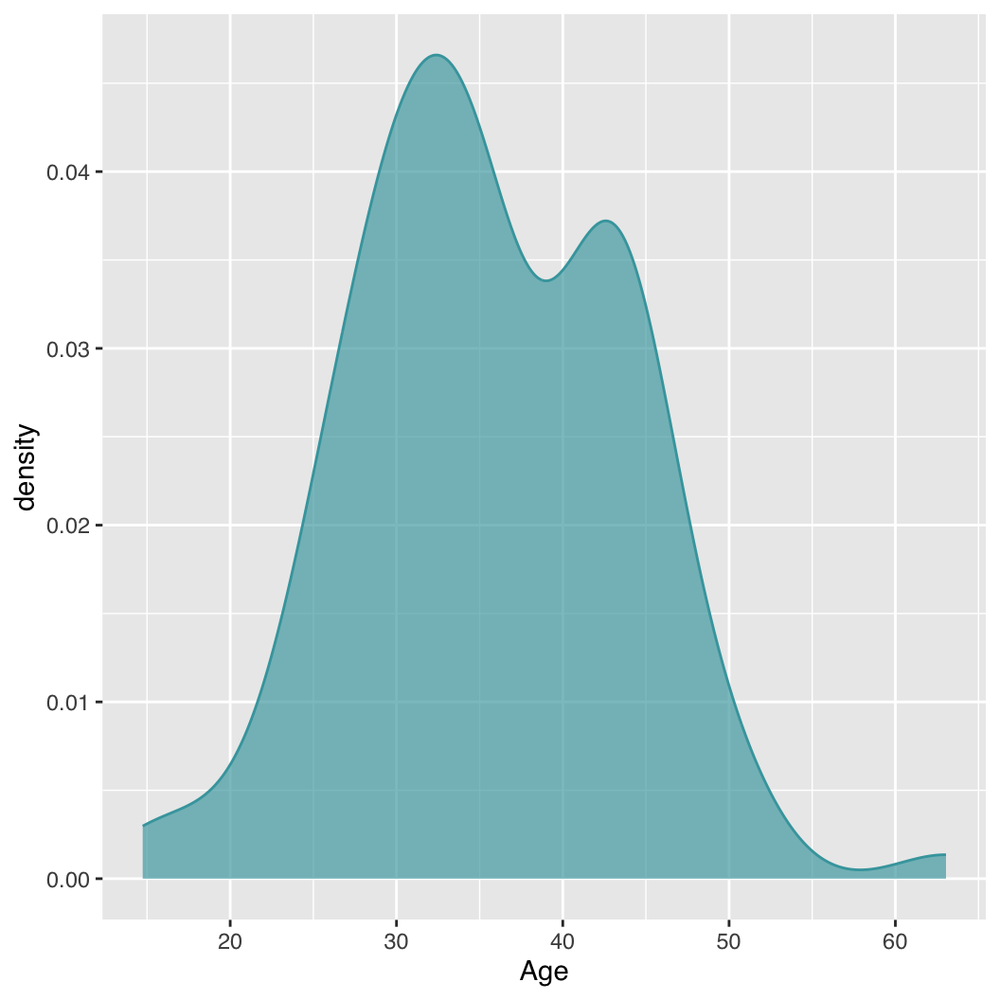

45 Introduction to ggplot2
ggplot2, created by Hadley Wickham (Wickham 2011), follows the Grammar of Graphics approach of Leland Wilkinson (Wilkinson 2012) and has a very different syntax than base R graphics functions. It is based on the grid graphics package and is for the most part not compatible with base graphics.
The general idea is to start by defining the data and then add and/or modify graphical elements in a stepwise manner, which allows one to build complex and layered visualizations. A simplified interface to ggplot graphics is provided in the qplot() function of ggplot2. This chapter focuses on the basics of the ggplot() function, which is more flexible and important to learn.
Do not try to combine base R graphics and ggplot2 graphics in the same plot. They are based on different graphics engines and are not compatible.
45.1 Setup
45.1.1 Packages
Load ggplot2
45.1.2 Synthetic Data
library(data.table)
set.seed(2022)
dt <- data.table(
PID = sample(8001:9000, size = 100),
Age = rnorm(100, mean = 33, sd = 8),
Weight = rnorm(100, mean = 70, sd = 9),
SysBP = rnorm(100, mean = 110, sd = 6),
DiaBP = rnorm(100, mean = 80, sd = 6),
Sex = factor(sample(c("Female", "Male"), size = 100, replace = TRUE))
)
dt[, SysBP := SysBP + 0.5 * Age]
dt[Sex == "Male", Weight := Weight + rnorm(.N, mean = 16, sd = 1.5)]
dt[Sex == "Male", Age := Age + rnorm(.N, mean = 6, sd = 1.8)]
dt <- as_tibble(dt)Define a color palette, palette_, and a version of the same palette at 2/3 transparency, palette_a, for use in plots:
palette_ <- c("#43A4AC", "#FA9860")
palette_a <- adjustcolor(palette_, 0.666)Confusingly, ggplot2 uses the aes() function, short for aesthetics, to define the plot data.
45.2 Box plot
ggplot requires a categorical x-axis to draw boxplots. This means we need to convert our dataset from wide to long format.
dt_long <- dt |> pivot_longer(
cols = c("SysBP", "DiaBP"),
names_to = "Measure",
values_to = "Value"
)
dt_long# A tibble: 200 × 6
PID Age Weight Sex Measure Value
<int> <dbl> <dbl> <fct> <chr> <dbl>
1 8228 28.5 82.2 Male SysBP 122.
2 8228 28.5 82.2 Male DiaBP 79.1
3 8435 50.1 72.6 Female SysBP 136.
4 8435 50.1 72.6 Female DiaBP 84.3
5 8718 31.0 73.0 Female SysBP 124.
6 8718 31.0 73.0 Female DiaBP 78.1
7 8823 30.0 77.5 Male SysBP 126.
8 8823 30.0 77.5 Male DiaBP 80.9
9 8843 40.5 86.7 Male SysBP 133.
10 8843 40.5 86.7 Male DiaBP 68.6
# ℹ 190 more rowsp <- ggplot(dt_long, aes(Measure, Value)) +
geom_boxplot()
p
We can specify color and fill to change the color of the boxplot border and fill, respectively.
p <- ggplot(dt_long, aes(Measure, Value)) +
geom_boxplot(color = palette_[1:2], fill = palette_a[1:2])
p
45.2.1 Grouped boxplot
p <- ggplot(dt, aes(x = Sex, y = Age)) +
geom_boxplot(colour = palette_[2:1], fill = palette_a[2:1])
p
45.3 Histogram
p <- ggplot(dt, aes(Age)) +
geom_histogram()
pWe can specify the number of bins to use with the bins argument and the border and fill colors with color and fill, respectively, as above. xlab() can be used to define the x-axis label.
p <- ggplot(dt, aes(Age)) +
geom_histogram(bins = 24, color = palette_[1], fill = palette_a[1]) +
xlab("Age (years)")
p45.3.1 Grouped Histogram
p <- ggplot(dt, aes(x = Age, fill = Sex)) +
geom_histogram(bins = 24, position = "identity")
pscale_fill_manual can be used to define the colors of the bars:
p <- ggplot(dt, aes(x = Age, fill = Sex)) +
geom_histogram(bins = 24, position = "identity") +
scale_fill_manual(values = palette_a[2:1])
pposition = "identity" displays overlapping bars. Alternatively, position = "dodge" can be used to display groups’ bars side by side instead. Finally, position = "stack", is the (unfortunate) default and results in vertically stacked bars, which can be confusing.
p <- ggplot(dt, aes(x = Age, fill = Sex)) +
geom_histogram(bins = 24, position = "dodge") +
scale_fill_manual(values = palette_a[2:1])
pp <- ggplot(dt, aes(x = Age, fill = Sex)) +
geom_histogram(bins = 24, position = "stack") +
scale_fill_manual(values = palette_a[2:1])
p45.4 Density plot
p <- ggplot(dt, aes(x = Age)) +
geom_density(color = palette_[1], fill = palette_a[1])
p45.4.1 Grouped density plot
p <- ggplot(dt, aes(x = Age, fill = Sex)) +
geom_density(color = NA) +
scale_fill_manual(values = palette_a[2:1])
p
45.5 Barplot
schools <- data.frame(UCSF = 4, Stanford = 7, Penn = 12)ggplot2 requires an explicit column in the data that define the categorical x-axis:
schools_df <- data.frame(
University = factor(colnames(schools),
levels = c("UCSF", "Stanford", "Penn")),
N_schools = as.numeric(schools[1, ])
)45.6 Scatterplot
p <- ggplot(dt, aes(Age, SysBP)) +
geom_point(color = palette_a[1])
p
45.6.1 Grouped Scatterplot
p <- ggplot(dt, aes(Age, SysBP, col = Sex)) +
geom_point() +
scale_color_manual(values = palette_[2:1])
p45.7 Save plot to file
We’ll use the grouped boxplot example from above to show how to save each type of plot to file, using a PDF output as an example.
p <- ggplot(dt, aes(x = Sex, y = Age)) +
geom_boxplot(colour = palette_[2:1], fill = palette_a[2:1])
ggsave("Age_by_Sex_ggplot.pdf", p,
width = 5.5, height = 5.5, scale = 1, units = "in")